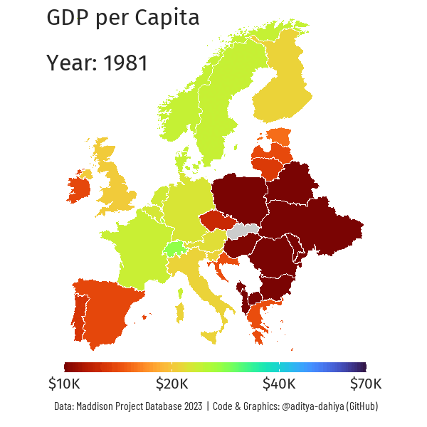

An animated chloropleth shows the transition of GDP per Capita in Europe from 1980 to 2022, with country-wise data
Maps
Data Is Plural
Animation
Governance
Author
Aditya Dahiya
Published
September 28, 2024

Figure 1: An animated chloropleth map of Europe depicting change in GDP per capita from 1980 to 2022.
How I made this graphic?
Loading libraries & data
Code
# Data Import and Wrangling Toolslibrary(tidyverse) # All things tidylibrary(sf) # Maps# Final plot toolslibrary(scales) # Nice Scales for ggplot2library(fontawesome) # Icons display in ggplot2library(ggtext) # Markdown text support for ggplot2library(showtext) # Display fonts in ggplot2library(colorspace) # Lighten and Darken colourslibrary(seecolor) # To print and view colourslibrary(patchwork) # Combining plotslibrary(openxlsx) # Get Excel File data from Web Sourceslibrary(gganimate) # Animationurl <-"https://dataverse.nl/api/access/datafile/421302"rawdf <-read.xlsx( url,sheet ="Full data",na.strings ="")